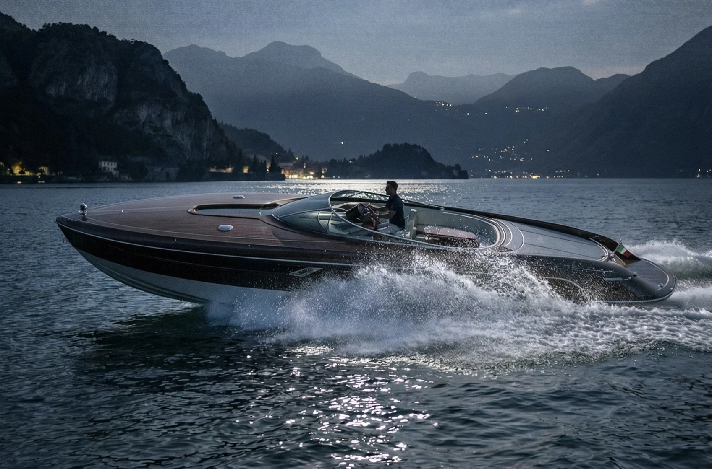
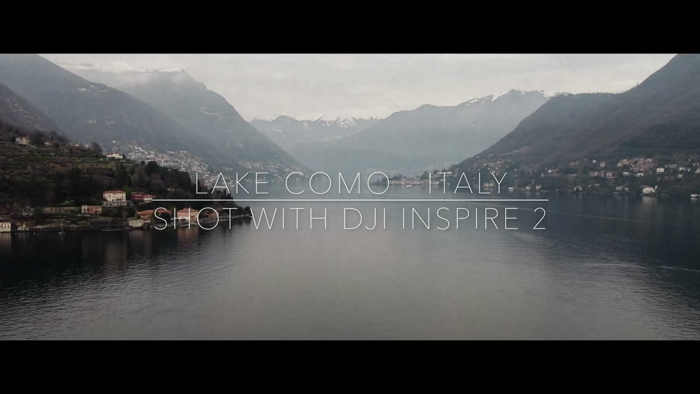
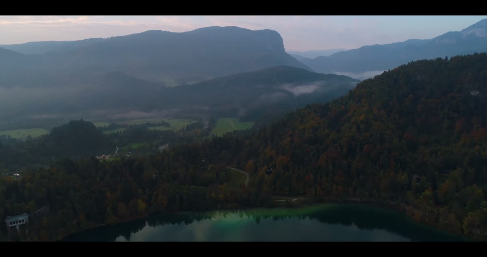

VELLARIO · COMO / Stile Italiano
VELLARIO · COMO
La Dolce Vita, sull'Acqua. A distinctly Italian expression of design, elegance and the pleasure of life on the water.

MAS 46 FULL · archivio progettualeDove Tutto Comincia
There are places whose character is inseparable from the way they are lived. Lake Como is one of them: architecture set against the mountains, gardens descending towards the water, and a distinctive tradition of arriving by boat. For VELLARIO, Como is not merely a location or a backdrop. It is the cultural inspiration for a new nautical point of view.
Explore Como
La Dolce Vita sull'Acqua
An aperitivo at the water's edge. The golden light of late afternoon. A short passage across the lake, with no need to hurry. La Dolce Vita is not a style borrowed for a photograph; it is the pleasure of living beautifully, simply and without ostentation. This is the spirit we want VELLARIO to express.
Explore La Dolce Vita
La Collezione
A collection should never feel like a row of interchangeable objects. Quantum 999, MAS 36, MAS 56, GranTender 72 and Gran Marlin explore different expressions of life on the water, from the spirit of the Italian sporting boat to the architectural ambition of a larger yacht. Each begins with its own design character.
Explore La Collezione


Storia & Tradizione
Long before the idea of VELLARIO, generations of boatbuilders, racers and craftsmen shaped the nautical culture of Lake Como. Their world was one of working boats and elegant runabouts, ingenuity and competition, skilled hands and bold ideas. It remains a source of inspiration for a new expression of Italian nautical elegance.
Explore Storia & TradizioneL'Arte del Dettaglio
The Italian idea of saper fare is more than craftsmanship alone. It is the discipline of knowing why a detail matters. Proportion, materials, the line of a hull and the feeling of a surface should belong to one coherent whole. For VELLARIO, beauty starts with these decisions.
Explore Design & Saper Fare
La Casa VELLARIO
La Casa VELLARIO is conceived as a new Italian nautical design house: distinctive in character, discreet in expression, personal in its approach. The ambition is to direct the design, identity and future client experience of a carefully considered collection—not to pursue volume or spectacle.
Explore La Casa VELLARIOUn Invito Personale
A boat becomes personal through thoughtful choices, not endless options. Su Misura is the Italian expression of this attention to the individual. The future VELLARIO relationship with its owners is envisaged as a conversation guided by taste, design and a shared appreciation of beauty.
Explore Contatti